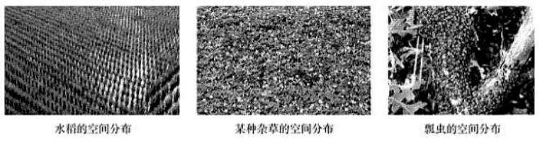
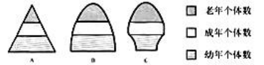
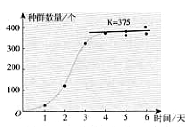

Population is
种群是一定时间内聚集在一定区域内所有同种生物个体的集合. 对于种群主要研究其空间特征、数量特征和遗传特征三个方面.
空间特征就是种群的分布模式, 有均匀分布、随机分布和集群分布三个模式. 例如农田中等距种植的水稻就是均匀分布, 杂草的分布一般是随机分布, 而某种瓢虫(需要在固定的植物上取食)的分布则是集群分布

种群的数量特征是一些参数, 包括种群密度、初级种群参数和次级种群参数.
种群在单位面积或体积内的个体数定义为种群密度(population density), 种群密度是种群最基本的数量特征, 测定种群密度的方法有样方法和标志重捕法两类.
样方法适用于植物和活动力较小的动物, 常用的取样方法是五点取样法和等距取样法, 关键在于要随机取样, 不能掺入主观因素; 标志重捕法则适用于活动能力强、活动范围大的动物, 先捕获一部分个体, 作上标记后放回原来的环境中, 一段时间后(这是为了让捕获到的个体和原种群“搅拌均匀”)进行重捕, 重捕到的动物中标记个体数占总个体数的比例来估计种群密度.
初级种群参数是直接决定种群数量和种群密度的参数, 即出生率/死亡率和迁入率/迁出率, 各自定义为发生相应事件的个体中占个体总数的比例. 其中[img]称为种群的自然增长率.
种群的年龄结构指一个种群中各年龄期的个体数目的比例, 大致可以分为增长型、稳定型和衰退型三种类型, 其模式图分别为

增长型的种群中, 其幼年个体多, 老年个体少, 种群未来的数量会越来越大; 稳定型的种群中各年龄层比例适中1, 种群未来的数量基本保持不变; 而衰退型的种群老年个体多, 幼年个体少, 种群数量将会减小, 甚至趋于灭亡.
在食物和空间条件充裕、气候适宜、没有敌害等条件下, 种群的数量每年以一定的倍数增长, 第二年的数量是第一年的\(\lambda\)倍, 若第1年种群的数量为\(N_0\)则\(t\)年后的种群数量\(N_t=N_0\lambda^t\)
这里的\(\lambda\)代表种群的增长率, 当\(\lambda>1\)时种群密度增大, 当\(\lambda=1\)时种群密度保持稳定, 而当\(\lambda<1\)时种群密度减小.
实际中自然界的资源和空间总是有限的, 当种群密度增大时种内竞争加剧, 且捕食者的数量也会增加, 这些因素都使得种群的自然增长率减少, 即\(\lambda\)减小, 当出生率与死亡率相等时, 种群的增长就会停止, 有时候会稳定在一定的水平, 这个值称为该环境下(对于这一种群)的环境容纳量(carring capacity), 又称K值. 这时候种群的增长曲线呈现“S”型. 生态学家高斯(G.W.Gause)饲养草履虫的实验就给出了S型曲线.
限制型增长曲线给了我们两个启示: 第一, 是某一个环境都对应着一个特定的K值, 对于野生生物资源的保护方面, 这启示我们需要建立自然保护区, 拓宽野生生物的生存空间, 以增大其环境容纳量, 才是保护野生动物的根本措施; 另一方面, 对于有害生物的防治, 应当增大环境阻力, 降低其环境容纳量.
第二, K/2值对应着种群增长速率最快的点, 因此这是一个“黄金开发点”, 把被开发资源的种群数量维持在K/2处可以达到既有较大的收获量, 又能够保持种群高速增长的效果, 符合可持续发展的原则, 另一方面, 对于有害生物, 应当防治其达到K/2值处, 否则会导致该有害生物成灾发展.
值得注意的是, 由于自然界影响种群数量的因素很多, 因此种群并不是保持在K值附近不变, 而是不断发生波动的.
请注意这里的比例适中并不意味着各年龄比例一致, 而是在各年龄固定死亡率的基础上（因此随着年龄的增长比例是必然有减少的趋势的）, 未来预期年龄结构能够保持不变的情况.↩︎